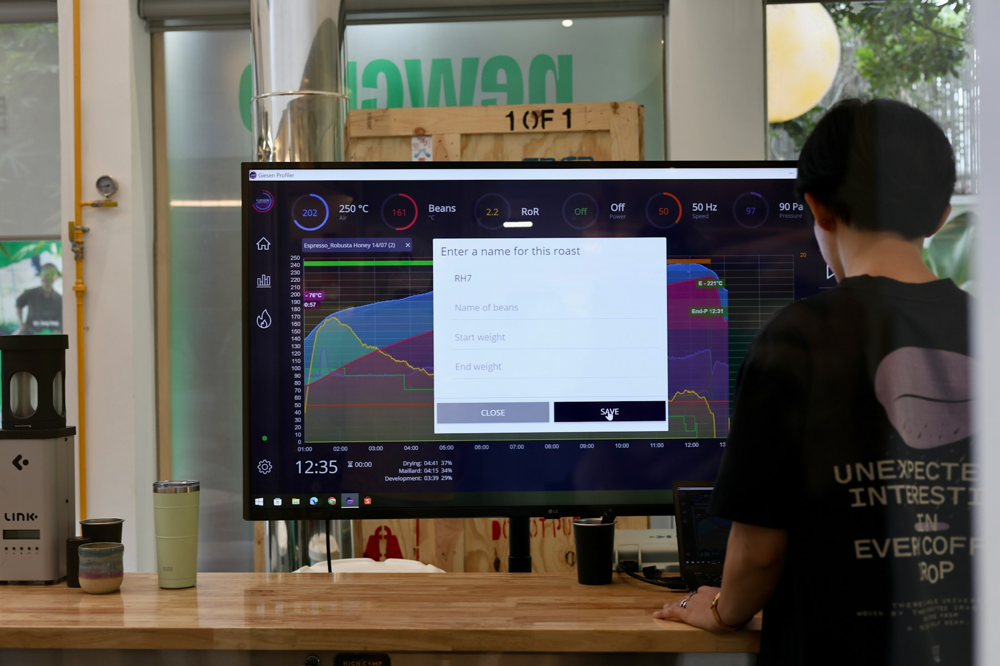

TL;DR
Prioritize tasks with a flexible weekly planner. Use tools like Trello and Toggl to streamline your management. Monitor time spent on each project regularly for better income outcomes.
Freelancers: Mastering Time with Multiple Income Streams
As a freelancer or side hustler, managing multiple income streams can feel overwhelming. You might think that because you're flexible, you can handle your time however you want. However, the reality is often different.
Each income source—from freelance writing on Upwork to selling crafts on Etsy—requires dedicated time. Many underestimate how poorly planned allocation can lead to burnout. Realize that poor time management not only affects your productivity but also your mental state.
Those sleepless nights worrying about deadlines can significantly impair your ability to perform optimally across various projects.
Why Traditional Time Management Fails Under Pressure
Conventional time-management techniques, like the Pomodoro or Eisenhower methods, often fall short when navigating the complexities of multiple income-generating projects. These tools can feel overly rigid, especially when unexpected demands arise.
For example, you might set aside three hours to concentrate on a proposal for Client A, only for Client B to request an urgent revision to a project due in 24 hours. Suddenly, your entire agenda is derailed.
The inherent unpredictability of freelancing means deadlines don’t always align conveniently. If you’re using the Pomodoro technique, which suggests working in 25-minute blocks with short breaks, you could find that this method doesn’t accommodate last-minute fires that need extinguishing.
For instance, committing a 90-minute block for focused work could be entirely wasted if you’re interrupted to tackle a pressing issue.
Consider a scenario where you have three ongoing projects with overlapping deadlines: a blog post due Friday, a social media campaign launching Saturday, and a product design review set for Monday.
Each project might require two to four hours of concentrated effort. If you allocate your time rigidly—say, two hours each day for these activities—and you face a last-minute request from a client that consumes an additional three hours, you may end up sacrificing the quality of your work or missing deadlines altogether.
This rigid approach can lead to serious tradeoffs; you might opt to rush through a project, resulting in subpar quality that doesn’t meet your clients’ expectations. Consequently, rather than enhancing your profitability, you risk damaging your professional relationships and the potential for future work.
The pressure to meet conflicting deadlines can spiral into a cycle of stress, ultimately leading to burnout if you don't build in the flexibility necessary to adapt.
Creating a Flexible Time Allocation Workflow That Works
Start by designing a flexible weekly planner that accommodates all your projects. Here's a straightforward workflow to begin with:
- Weekly Review: Every Sunday, assess your pending tasks.
- Prioritize: List tasks by urgency and importance using a numbering system. Focus on immediate deadlines first.
- Time Blocking: Dedicate specific blocks of your day to each task. For instance, you might block out 9 AM to 11 AM for freelance writing, 2 PM to 4 PM for your Etsy shop, and 7 PM to 9 PM for consulting work.
This structure promotes focus while allowing room for unexpected shifts.
- Daily Check-ins: End each day by reassessing what was accomplished and what needs adjustment for the next day.
Keep in mind, flexibility is key. For example, if a client calls last minute, you may need to reshuffle your time blocks to accommodate their needs.
Realistic Example: Scheduling 3 Income Streams in 30 Days
Imagine you’re juggling freelance graphic design, an online course creation, and a dropshipping business. Here’s a simplified 30-day output:
- Week 1: Focus on graphic design. Dedicate 15 hours to completing client projects and revising your portfolio.
- Week 2: Transition to course creation. Spend 20 hours developing lesson plans and recording content.
- Week 3: Pivot to dropshipping. Utilize 15 hours to analyze trends, select products, and update your online store.
- Week 4: Allocate 5 hours to review the month. Assess your earnings from each income stream, like $600 from design, $300 from the course, and $200 from the dropshipping venture.
By creating a phased approach, you can assess which streams yield the best outcomes and adjust quickly for lesser-performing avenues.
Avoiding Common Pitfalls That Disrupt Your Workflow

Adopting multiple income streams is rewarding but comes with its own set of common mistakes. One frequent mistake is overcommitting—taking on too many clients and projects in one go.
This can lead to missed deadlines and damaged reputations. For instance, if you agree to deliver three articles in a week but fail, it may push clients to seek out freelancers who can meet their demands.
Another significant pitfall is neglecting time tracking. Many freelancers underestimate how long tasks actually take, leading to project bottlenecks. To avoid these mistakes, make it a routine to set realistic expectations for each income stream and stick to them, ensuring sustainable progress without overwhelming yourself.
Next Steps: Tools to Enhance Your Time Management Game
Utilizing the right tools is essential to streamline your workflow. Popular software options like Trello for project management and Toggl for time tracking can greatly enhance effectiveness.
For freelancers, implementing these tools means you can visualize your tasks and allocate time smartly. Here's how to get started:
- Trello: Organize projects, set deadlines, and assign tasks to ensure nothing falls through the cracks.
- Toggl: Track how long tasks are taking to refine future planning.
- Google Calendar: Schedule exact time blocks and integrate reminders to maintain your workflow. Make it a habit to review which tools work best for you every 30 days; occasionally, your needs may evolve or change based on your projects.
FAQ
How can I effectively manage my time with multiple side jobs?
Start by creating a flexible time allocation system that includes daily and weekly reviews of your projects.
What tools can help streamline my income-generating projects?
Using software like Trello for project management and Toggl for time tracking can simplify your processes.
This article has been reviewed for practical usefulness and updated when information changes.
Next step
Use the article as a decision point, not just reading material. Your next system matters more than more browsing.
Search more articles
Find related tools, workflows, and guides.
Photo credits
- Photo 1: geralt via Pixabay
- Photo 2: ThisisEngineering via Unsplash
- Photo 3: ELLA DON via Unsplash
- Photo 4: Fahim Muntashir via Unsplash
- Photo 5: Thức Trần via Unsplash